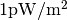
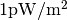
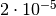
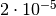
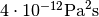
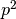
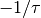
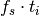

Standards¶
The standards module provides implementations of standards.
ISO/TR 25417 2007¶
ISO/TR 25417:2007 specifies definitions of acoustical quantities and terms used in noise measurement documents prepared by ISO Technical Committee TC 43, Acoustics, Subcommittee SC 1, Noise, together with their symbols and units, with the principal aim of harmonizing the terminology used [ISO25417].
| [ISO24517] | http://www.iso.org/iso/home/store/catalogue_tc/catalogue_detail.htm?csnumber=42915 |
- acoustics.standards.iso_tr_25417_2007.REFERENCE_ENERGY = 1e-12¶
Reference value of the sound energy
 is 1 pJ.
is 1 pJ.
- acoustics.standards.iso_tr_25417_2007.REFERENCE_INTENSITY = 1e-12¶
Reference value of the sound intensity
 is .
is .
- acoustics.standards.iso_tr_25417_2007.REFERENCE_POWER = 1e-12¶
Reference value of the sound power
 is 1 pW.
is 1 pW.
- acoustics.standards.iso_tr_25417_2007.REFERENCE_PRESSURE = 2e-05¶
Reference value of the sound pressure
 is  Pa.
is  Pa.
- acoustics.standards.iso_tr_25417_2007.REFERENCE_SOUND_EXPOSURE = 4e-12¶
Reference value of the sound exposure is .
- acoustics.standards.iso_tr_25417_2007.equivalent_sound_pressure_level(pressure, reference_pressure=2e-05, axis=1)[source]¶
Time-averaged sound pressure level
 or equivalent-continious sound pressure level
or equivalent-continious sound pressure level  in dB.
in dB.Parameters: - pressure – Instantaneous sound pressure
 .
. - reference_pressure – Reference value .
- axis – Axis.

- pressure – Instantaneous sound pressure
- acoustics.standards.iso_tr_25417_2007.normal_time_averaged_sound_intensity(time_averaged_sound_intensity, unit_normal_vector)[source]¶
Normal time-averaged sound intensity
 .
.Parameters: - time_averaged_sound_intensity – Time-averaged sound intensity
 .
. - unit_normal_vector – Unit normal vector
 .
.

- time_averaged_sound_intensity – Time-averaged sound intensity
- acoustics.standards.iso_tr_25417_2007.normal_time_averaged_sound_intensity_level(normal_time_averaged_sound_intensity, reference_intensity=1e-12)[source]¶
Normal time-averaged sound intensity level
 in dB.
in dB.Parameters: - normal_time_averaged_sound_intensity – Normal time-averaged sound intensity
 .
. - reference_intensity – Reference sound intensity .

- normal_time_averaged_sound_intensity – Normal time-averaged sound intensity
- acoustics.standards.iso_tr_25417_2007.peak_sound_pressure(pressure, axis=1)[source]¶
Peak sound pressure
 is the greatest absolute sound pressure during a certain time interval.
is the greatest absolute sound pressure during a certain time interval.Parameters: - pressure – Instantaneous sound pressure .
- axis – Axis.

- pressure – Instantaneous sound pressure
- acoustics.standards.iso_tr_25417_2007.peak_sound_pressure_level(peak_sound_pressure, reference_pressure=2e-05)[source]¶
Peak sound pressure level
 in dB.
in dB.Parameters: - peak_sound_pressure – Peak sound pressure .
- reference_pressure – Reference value .

- peak_sound_pressure – Peak sound pressure
- acoustics.standards.iso_tr_25417_2007.sound_energy(power, axis=1)[source]¶
Sound energy
 ..
..Parameters: power – Sound power  .
.
- acoustics.standards.iso_tr_25417_2007.sound_energy_level(energy, reference_energy=1e-12)[source]¶
Sound energy level L_{J} in dB.
Parameters: - energy – Sound energy .
- reference_energy – Reference sound energy .

- energy – Sound energy
- acoustics.standards.iso_tr_25417_2007.sound_exposure(pressure, axis=1)[source]¶
Sound exposure
 .
.Parameters: - pressure – Instantaneous sound pressure .
- axis – Axis.

- pressure – Instantaneous sound pressure
- acoustics.standards.iso_tr_25417_2007.sound_exposure_level(sound_exposure, reference_sound_exposure=4e-12)[source]¶
Sound exposure level
 in dB.
in dB.Parameters: - sound_exposure – Sound exposure .
- reference_sound_exposure – Reference value


- sound_exposure – Sound exposure
- acoustics.standards.iso_tr_25417_2007.sound_intensity(pressure, velocity)[source]¶
Sound intensity
 .
.Parameters: - pressure – Sound pressure
 .
. - velocity – Particle velocity
 .
.

- pressure – Sound pressure
- acoustics.standards.iso_tr_25417_2007.sound_power_level(power, reference_power=1e-12)[source]¶
Sound power level
 .
.Parameters: - power – Sound power .
- reference_power – Reference sound power .

- power – Sound power
- acoustics.standards.iso_tr_25417_2007.sound_pressure_level(pressure, reference_pressure=2e-05)[source]¶
Sound pressure level
 in dB.
in dB.Parameters: - pressure – Instantaneous sound pressure .
- reference_pressure – Reference value .

- pressure – Instantaneous sound pressure
- acoustics.standards.iso_tr_25417_2007.time_averaged_sound_intensity(intensity, axis=1)[source]¶
Time-averaged sound intensity
.Parameters: - intensity – Sound intensity .
- axis – Axis.

- intensity – Sound intensity
- acoustics.standards.iso_tr_25417_2007.time_averaged_sound_intensity_level(time_averaged_sound_intensity, reference_intensity=1e-12, axis=0)[source]¶
Time-averaged sound intensity level
 .
.Parameters: - time_averaged_sound_intensity – Time-averaged sound intensity .
- reference_intensity – Reference sound intensity .

- time_averaged_sound_intensity – Time-averaged sound intensity
IEC 61672-1:2013¶
IEC 61672-1:2013 gives electroacoustical performance specifications for three kinds of sound measuring instruments [IEC61672]:
- time-weighting sound level meters that measure exponential-time-weighted, frequency-weighted sound levels;
- integrating-averaging sound level meters that measure time-averaged, frequency-weighted sound levels; and
- integrating sound level meters that measure frequency-weighted sound exposure levels.
| [IEC61672] | http://webstore.iec.ch/webstore/webstore.nsf/artnum/048669!opendocument |
- acoustics.standards.iec_61672_1_2013.NOMINAL_FREQUENCIES = array([ 1.00000000e+01, 1.25000000e+01, 1.60000000e+01, 2.00000000e+01, 2.50000000e+01, 3.15000000e+01, 4.00000000e+01, 5.00000000e+01, 6.30000000e+01, 8.00000000e+01, 1.00000000e+02, 1.25000000e+02, 1.60000000e+02, 2.00000000e+02, 2.50000000e+02, 3.15000000e+02, 4.00000000e+02, 5.00000000e+02, 6.30000000e+02, 8.00000000e+02, 1.00000000e+03, 1.25000000e+03, 1.60000000e+03, 2.00000000e+03, 2.50000000e+03, 3.15000000e+03, 4.00000000e+03, 5.00000000e+03, 6.30000000e+03, 8.00000000e+03, 1.00000000e+04, 1.25000000e+04, 1.60000000e+04, 2.00000000e+04])¶
Nominal frequencies.
- acoustics.standards.iec_61672_1_2013.WEIGHTING_A = array([-70.4, -63.4, -56.7, -50.5, -44.7, -39.4, -34.6, -30.2, -26.2, -22.5, -19.1, -16.1, -13.4, -10.9, -8.6, -6.6, -4.8, -3.2, -1.9, -0.8, 0. , 0.6, 1. , 1.2, 1.3, 1.2, 1. , 0.5, -0.1, -1.1, -2.5, -4.3, -6.6, -9.3])¶
Frequency weighting A.
- acoustics.standards.iec_61672_1_2013.WEIGHTING_C = array([-14.3, -11.2, -8.5, -6.2, -4.4, -3. , -2. , -1.3, -0.8, -0.5, -0.3, -0.2, -0.1, 0. , 0. , 0. , 0. , 0. , 0. , 0. , 0. , 0. , -0.1, -0.2, -0.3, -0.5, -0.8, -1.3, -2. , -3. , -4.4, -6.2, -8.5, -11.2])¶
Frequency weighting C.
- acoustics.standards.iec_61672_1_2013.WEIGHTING_Z = array([ 0., 0., 0., 0., 0., 0., 0., 0., 0., 0., 0., 0., 0., 0., 0., 0., 0., 0., 0., 0., 0., 0., 0., 0., 0., 0., 0., 0., 0., 0., 0., 0., 0., 0.])¶
Frequency weighting Z.
- acoustics.standards.iec_61672_1_2013.average(data, sample_frequency, averaging_time)[source]¶
Average the sound pressure squared.
Parameters: - data – Energetic quantity, e.g. .
- sample_frequency – Sample frequency.
- averaging_time – Averaging time.
Returns: Time weighting is applied by applying a low-pass filter with one real pole at .
Note
Because  is generally not an integer, samples are discarded. This results in a drift of samples for longer signals (e.g. 60 minutes at 44.1 kHz).
- acoustics.standards.iec_61672_1_2013.integrate(data, sample_frequency, integration_time)[source]¶
Integrate the sound pressure squared using exponential integration.
Parameters: - data – Energetic quantity, e.g. .
- sample_frequency – Sample frequency.
- integration_time – Integration time.
Returns: Time weighting is applied by applying a low-pass filter with one real pole at .
Note
Because is generally not an integer, samples are discarded. This results in a drift of samples for longer signals (e.g. 60 minutes at 44.1 kHz).
- acoustics.standards.iec_61672_1_2013.time_averaged_sound_level(pressure, sample_frequency, averaging_time, reference_pressure=2e-05)[source]¶
Time-averaged sound pressure level.
Parameters: - pressure – Dynamic pressure.
- sample_frequency – Sample frequency.
- averaging_time – Averaging time.
- reference_pressure – Reference pressure.
- acoustics.standards.iec_61672_1_2013.time_weighted_sound_level(pressure, sample_frequency, integration_time, reference_pressure=2e-05)[source]¶
Time-weighted sound pressure level.
Parameters: - pressure – Dynamic pressure.
- sample_frequency – Sample frequency.
- integration_time – Integration time.
- reference_pressure – Reference pressure.